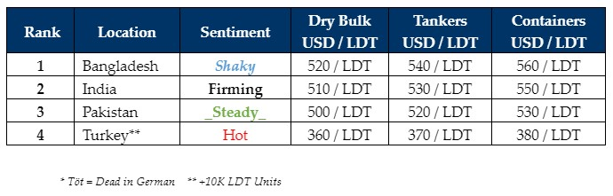

inWeekly Demolition Reports13/05/2024

Towards the end of the working week, the Bangladeshi Taka took the centerfold as it crashed by about 6.4% againstthe U.S. Dollar in a couple of days. This jump was certainly expected, in that, a measured BDT 7 devaluing of the Taka against the U.S. Dollar was previously agreed to in the ‘terms and conditions’ of the IMF loan that was sanctioned to the country back in January, which then saw the easing of L/C & financing restrictions for Chattogram Recyclers. This depreciation in the Taka will translate into higher L/C costs that should escalate by about 6% – 7% (at least) and will further crunch down on already suffocated margins that have resulted from flatlining steel plate prices, ensuring that upcoming vessel acquisitions will be more expensive for local Recyclers, who will lose out to a firming India, especially if Bangladeshi plate prices fail to move North soon.
Notwithstanding the expectantly shaky end to Bangladesh’s working week, a couple of pre-and-post Taka-drop sales did register into this market and given their fixing levels, the impact from this fall so far seems to be minimal. On the other side, as Indian elections continue into their third week and in the face of growing anticipation of PM Modi’s seemingly inevitable victory, not only have Indian steel prices been on a mission of late, but Alang Recyclers also seem to be growing increasingly confident that Mr. Modi’s victory will bring with it, the highly-awaited portfolio of infrastructure projects that stand to skyrocket India’s Economy, which is the 5th largest in the world today. Pakistani Recyclers meanwhile continue to kick-back & relax as their increasingly evident absence at the bidding tables has finally resulted in Gadani’s anchorage going ‘dark’ this week. Moreover, as India continues to improve on the back of their fundamentals, how long will it be before Gadani goes ‘dark’ for the rest of the summer? Having said that, a tiny faction of Gadani Recyclers has come forward with minor price improvements that remain woefully insufficient to snag any (market) units. Finally, the hungry collection of Aliaga Recyclers out West responsible for driving Turkish recycling prices to the moon last week, continue to negotiate for their share of the firmer tonnage that has come recently available, reportedly without any recourse.
As the overall flavor in the supply of vessels remains containers, this week saw several of the larger liner companies gearing up to sell their containers, amidst freight rates in the feeder sector that remain comparatively more depressed (than other sectors) and noticeably firmer recycling offers on the table. Whilst Dry Bulk / Cape freight rates (particularly on the larger LDT spectrum) push on, this has seen a near perfect dearth of juicy large LDT dry units for a recycling sale so far this year, while Sinokor commits a 4th container for a recycling sale at eye-watering levels this week.
For week 19 of 2024, GMS demo rankings / pricing for the week are as below.

📄 Download PDF: Ship-recycling-market-insight-week-19-2024-Taka_Tot.pdfSource: GMS,Inc.https://www.gmsinc.net/gms_new/index.php/web